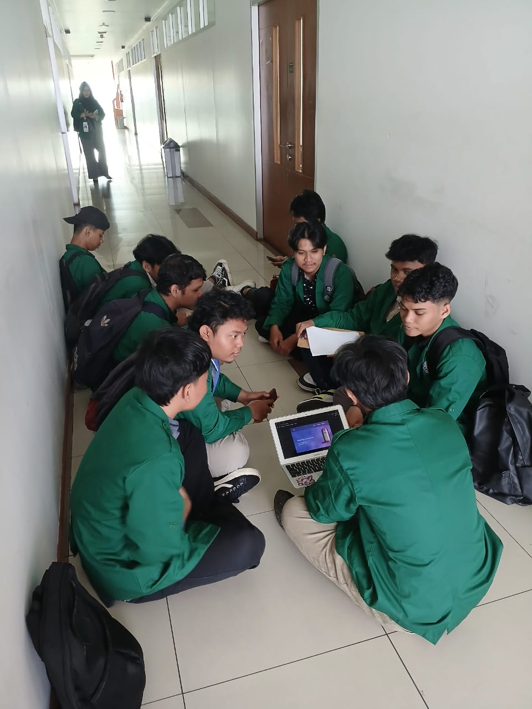
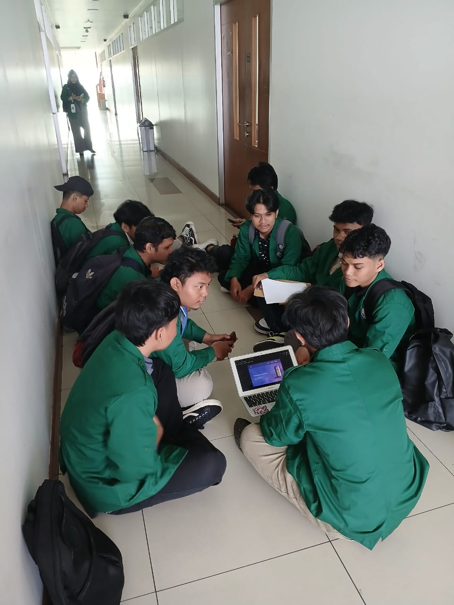

Karya nyata yang dibangun dengan dedikasi penuh dan perhatian pada detail.
Meals & International Food App
Aplikasi mobile Flutter untuk menampilkan ribuan resep makanan lokal dan internasional dengan data real-time dari REST API. Fitur pencarian dengan debounce, filter multi-kategori (Asia, Eropa, Amerika, Mediterania, dll), detail resep lengkap (bahan, langkah, nutrisi, video), dan antarmuka responsif dengan animasi halus di berbagai ukuran perangkat.
Fitur Utama:
- REST API integration dengan caching
- Pencarian real-time dengan debounce
- Filter kategori masakan multi-dimensi
- Detail resep: bahan, langkah, nutrisi
- UI responsif & animasi transisi halus
- Error handling & loading state optimal
Perfume E-Commerce Application
Platform e-commerce lengkap untuk penjualan parfum premium dengan CodeIgniter 3 dan MySQL. Mencakup front-end toko pelanggan dan back-end panel admin. Filter produk berdasarkan merek, kategori aroma, harga; detail produk multi-foto; keranjang & checkout; panel admin CRUD produk, kategori, pesanan, pengguna; serta laporan transaksi sederhana.
Fitur Utama:
- Katalog dengan filter & pencarian lanjutan
- Galeri foto produk multiple
- Keranjang belanja & checkout
- Panel admin CRUD komprehensif
- Manajemen pengguna & autentikasi
- Laporan transaksi & monitoring
Simple Video Viewer Website
Website streaming video berbasis Laravel dengan CMS terintegrasi. Arsitektur MVC bersih memisahkan logika bisnis, presentasi, dan data. Admin mengelola video (upload, metadata, thumbnail, visibilitas). Pengguna terautentikasi streaming video langsung di browser. Eloquent ORM mengelola relasi data dengan efisien.
Fitur Utama:
- Video streaming dari server storage
- CRUD manajemen video oleh admin
- Role-based authentication (user/admin)
- Routing & middleware terstruktur
- Blade template engine dinamis
- Eloquent ORM untuk manajemen data
Trendy Wear — Fashion Website UI/UX
Desain UI/UX komprehensif untuk fashion e-commerce targeting millennial urban. Dimulai dari riset kompetitor, user persona, information architecture, wireframe low-fidelity, hingga high-fidelity mockup dan prototype interaktif penuh. Design system konsisten: komponen reusable, tipografi hierarkis, palet warna kohesif. Prototype mencakup alur lengkap landing → kategori → detail → filter → keranjang → checkout → konfirmasi.
Deliverables:
- User persona & user flow (20+ screens)
- Wireframe low-fidelity komprehensif
- High-fidelity mockup dengan design system
- Prototype interaktif full-flow
- Component library yang reusable
- Panduan tipografi & skema warna
Event & Ticketing Platform
Platform digital pembelian tiket acara (konser, seminar, festival, pameran, olahraga) yang dioptimalkan untuk minimal friction. Progress indicator jelas, form multi-step ringkas, konfirmasi visual setiap tahapan. Fitur unggulan: seat map interaktif dengan real-time availability, countdown limited seat, e-ticket QR code digital, dan My Tickets dashboard.
Fitur yang Didesain:
- Discovery & filter acara multi-kategori
- Interactive seat map real-time
- Multi-step booking dengan progress indicator
- E-ticket QR code digital
- My Tickets & booking history
- Notifikasi & event reminder
 

Pemesanan Tiket Pariwisata Phinisi
Aplikasi mobile pemesanan tiket wisata kapal Phinisi — ikon maritim Indonesia. Estetika desain menggabungkan keindahan budaya Bugis-Makassar dengan UX modern. Pemilihan rute laut (Labuan Bajo, Raja Ampat, Kepulauan Seribu), jadwal keberangkatan, paket wisata (day trip/multi-hari dengan akomodasi), pilihan kabin, sistem ulasan wisatawan, galeri destinasi, dan panduan wisata digital terintegrasi.
Fitur yang Didesain:
- Pemilihan rute & destinasi wisata laut
- Kalender jadwal & ketersediaan
- Paket wisata day trip & multi-hari
- Pilihan kabin & fasilitas kapal
- Sistem ulasan & rating
- Panduan wisata & itinerary digital